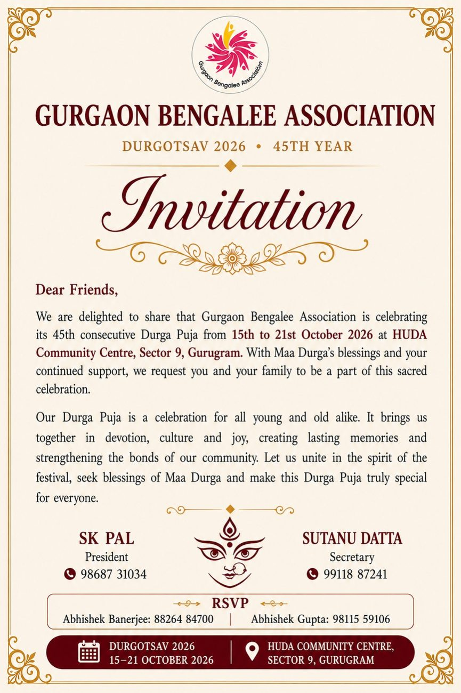
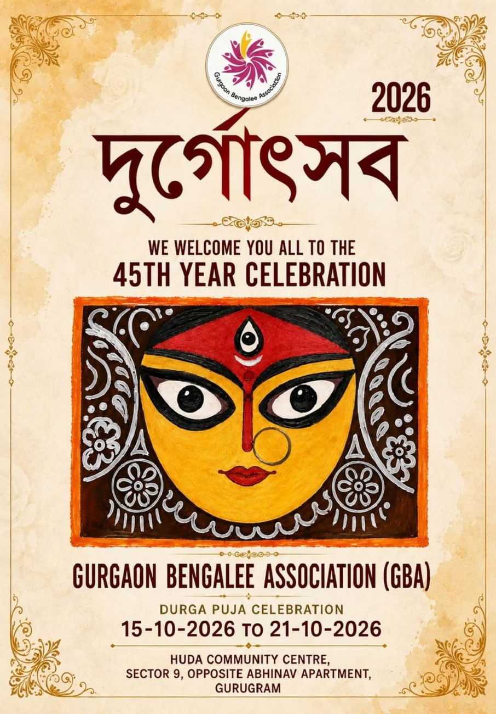

Gurgaon Bengalee Association organises Gurugram's oldest Durga Puja, a tradition that began in 1982 and has grown alongside the city itself. What started as a small gathering of Bengali families has become one of the most anticipated cultural celebrations in the region, bringing together devotion, music, theatre and community spirit over five days of festivities.


Until Durga Puja 2026 Begins